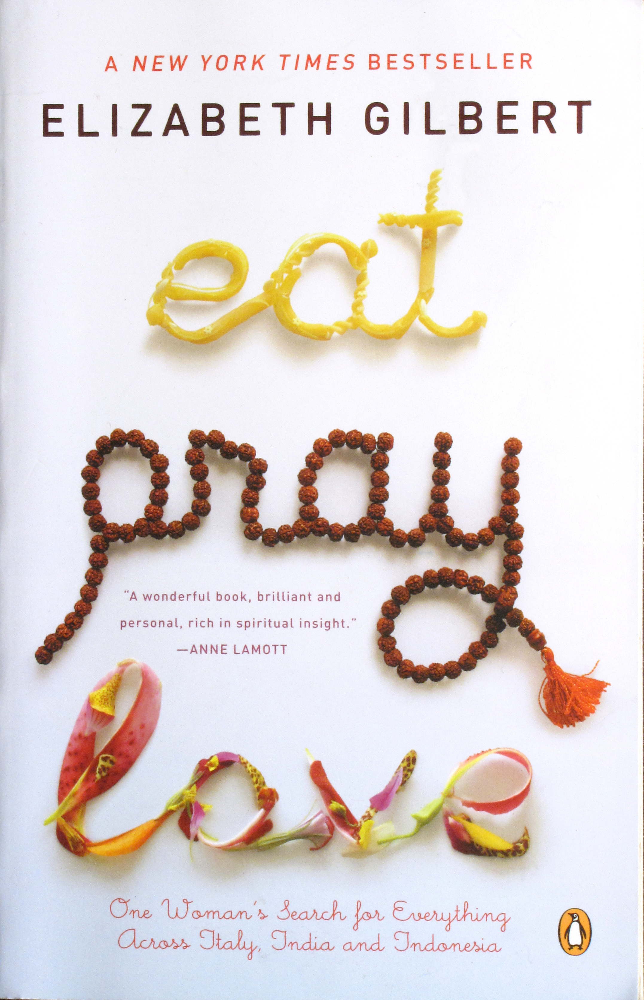

My name is Faith and I am a 21 year old senior in the VCD program at EWU. My goal is to graduate in the spring of 2017, and I hope everything works out the way it should! I love nature photography, and I am a part of many fandoms, some of which include Supernatural, Doctor Who, Sherlock (BBC), and many more. I can be nerdy at times (hence all the fandoms) and that's okay. I'm also shy and introverted, which I'm learning to embrace. I also love to read, write, and listen to music. I collect shot glasses and I think I have over 100 by now. I have a 16 year old mutt named Nellie and she's all black, but when the sun hits her just right, you can see brown swirls. I'm a huge Netflix binge watcher; the shows I've recently seen include Lost Girl, Blue Bloods, Royal Pains, and Haven. In the near future, I hope to use my photography skills to do freelance nature shots, or sell my own photos, either as single prints or in calendar format.
Although I saw the movie before reading the book, my favorite book would have to be Eat, Pray, Love by Elizabeth Gilbert. Following a divorce and a crushing depression, Gilbert set out to examine three different aspects of her nature, set against the backdrop of three different cultures: pleasure in Italy, devotion in India, and on the Indonesian island of Bali, a balance between worldly enjoyment and divine transcendence. It's my favorite book because it tells the story of a woman who took her life back and made it her own. It's funny, inspiring, and I'd reccomend it to anyone.
Maybe it's the Italian in me, or maybe it's all the cheese, but I love pizza. I could eat a fresh slice nearly everyday. I prefer vegetarian toppings, but I'll take some pepperoni if it's given to me.

I guess it's the same with pizza, I could eat it everyday. I love all kinds of pasta, except maybe for whole wheat.

It's more of a snack than a meal, but these are my favorite type of cookies to make, and to eat. They're warm, gooey, and full of chocolate!